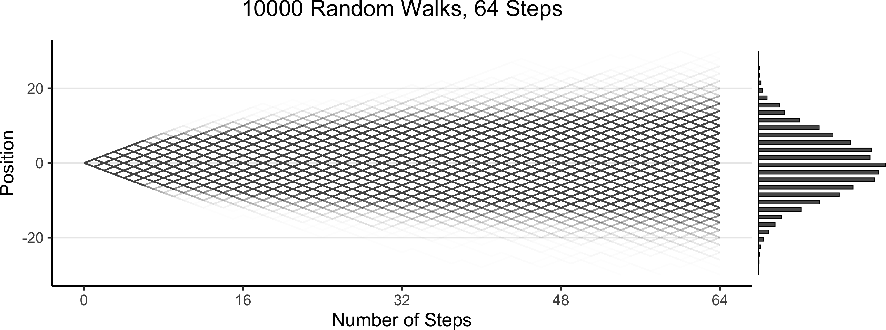
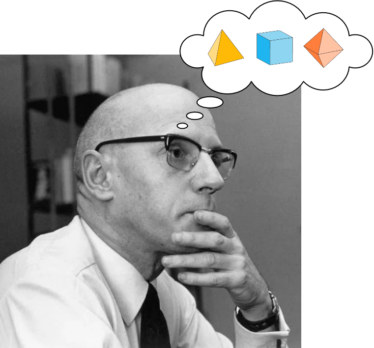
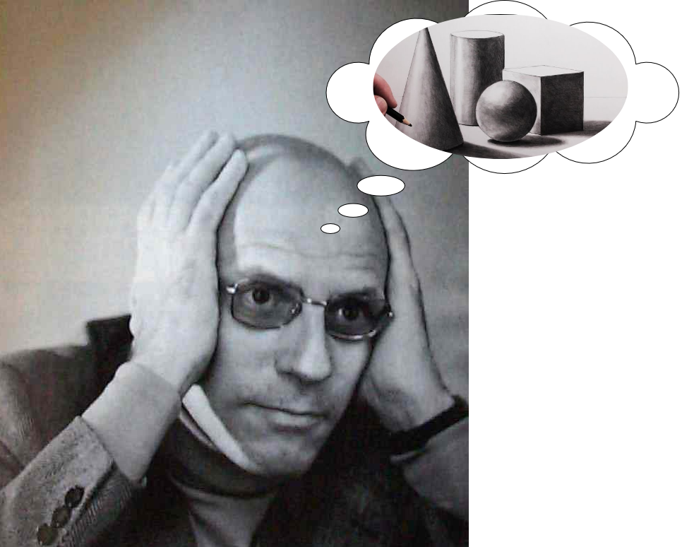
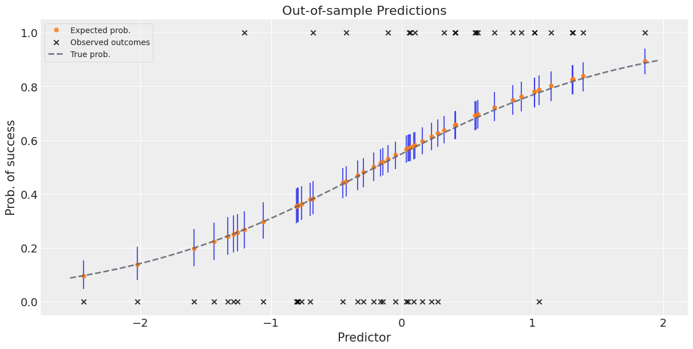
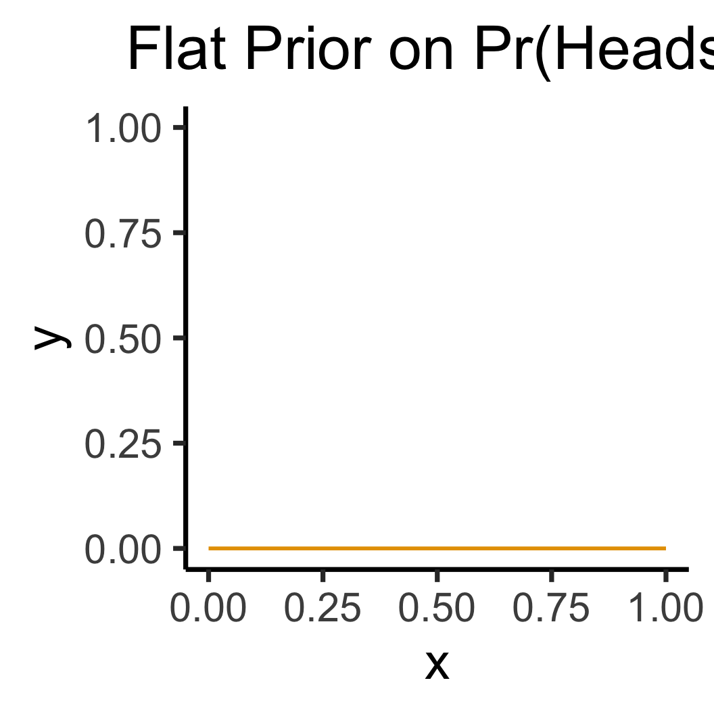
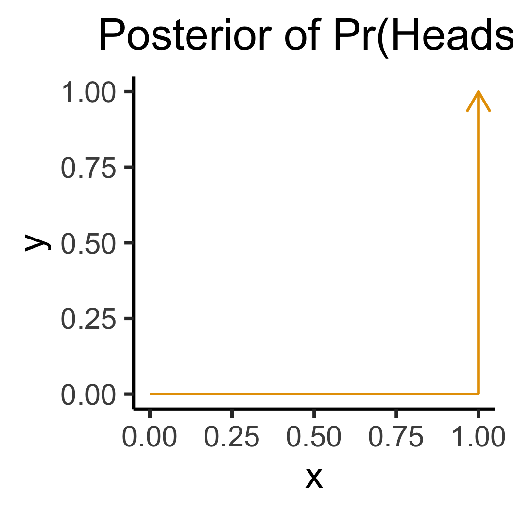
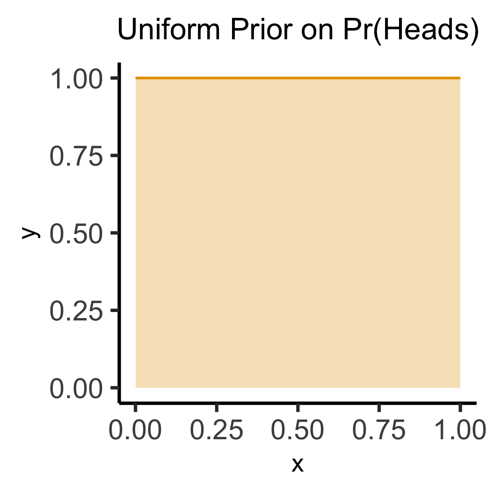

Code
source("../dsan-globals/_globals.r")DSAN 5650: Causal Inference for Computational Social Science
Summer 2025, Georgetown University
\[ \DeclareMathOperator*{\argmax}{argmax} \DeclareMathOperator*{\argmin}{argmin} \newcommand{\bigexp}[1]{\exp\mkern-4mu\left[ #1 \right]} \newcommand{\bigexpect}[1]{\mathbb{E}\mkern-4mu \left[ #1 \right]} \newcommand{\definedas}{\overset{\small\text{def}}{=}} \newcommand{\definedalign}{\overset{\phantom{\text{defn}}}{=}} \newcommand{\eqeventual}{\overset{\text{eventually}}{=}} \newcommand{\Err}{\text{Err}} \newcommand{\expect}[1]{\mathbb{E}[#1]} \newcommand{\expectsq}[1]{\mathbb{E}^2[#1]} \newcommand{\fw}[1]{\texttt{#1}} \newcommand{\given}{\mid} \newcommand{\green}[1]{\color{green}{#1}} \newcommand{\heads}{\outcome{heads}} \newcommand{\iid}{\overset{\text{\small{iid}}}{\sim}} \newcommand{\lik}{\mathcal{L}} \newcommand{\loglik}{\ell} \DeclareMathOperator*{\maximize}{maximize} \DeclareMathOperator*{\minimize}{minimize} \newcommand{\mle}{\textsf{ML}} \newcommand{\nimplies}{\;\not\!\!\!\!\implies} \newcommand{\orange}[1]{\color{orange}{#1}} \newcommand{\outcome}[1]{\textsf{#1}} \newcommand{\param}[1]{{\color{purple} #1}} \newcommand{\pgsamplespace}{\{\green{1},\green{2},\green{3},\purp{4},\purp{5},\purp{6}\}} \newcommand{\pedge}[2]{\require{enclose}\enclose{circle}{~{#1}~} \rightarrow \; \enclose{circle}{\kern.01em {#2}~\kern.01em}} \newcommand{\pnode}[1]{\require{enclose}\enclose{circle}{\kern.1em {#1} \kern.1em}} \newcommand{\ponode}[1]{\require{enclose}\enclose{box}[background=lightgray]{{#1}}} \newcommand{\pnodesp}[1]{\require{enclose}\enclose{circle}{~{#1}~}} \newcommand{\purp}[1]{\color{purple}{#1}} \newcommand{\sign}{\text{Sign}} \newcommand{\spacecap}{\; \cap \;} \newcommand{\spacewedge}{\; \wedge \;} \newcommand{\tails}{\outcome{tails}} \newcommand{\Var}[1]{\text{Var}[#1]} \newcommand{\bigVar}[1]{\text{Var}\mkern-4mu \left[ #1 \right]} \]
source("../dsan-globals/_globals.r")(There are a lot of words in HW2 that I haven’t had the chance to explain yet!)
0100101) so computer can…| Super-charge your EDA/modeling | Estimate \(\boldsymbol{\theta}\) from data |
|---|---|
| \(\leadsto\) Prior distributions | \(\leadsto\) Posterior distributions |
library(tidyverse)
library(ggExtra)
gen_walk_plot <- function(walk_data, a=0.0075) {
# print(end_df)
grid_color <- rgb(0, 0, 0, 0.1)
# And plot!
walkplot <- ggplot() +
geom_line(
data = walk_data$long_df,
aes(x = t, y = pos, group = pid),
linewidth = g_linewidth,
alpha = a,
#color = cb_palette[2]
#color = "#cf8f00"
color = "black"
) +
geom_point(
data = walk_data$end_df,
aes(x = t, y = endpos),
alpha = 0
) +
scale_x_continuous(
breaks = seq(
0,
walk_data$num_steps,
walk_data$num_steps / 4
)
) +
scale_y_continuous(
breaks = seq(-20, 20, 10)
) +
theme_dsan(base_size=24) +
theme(
legend.position = "none",
# title = element_text(size = 16)
) +
theme(
panel.grid.major.y = element_line(
color = grid_color,
linewidth = 1,
linetype = 1
)
) +
labs(
title = paste0(
walk_data$num_people, " Random Walks, ",
walk_data$num_steps, " Steps"
),
x = "Number of Steps",
y = "Position"
)
}
walk_data <- readRDS("assets/walk_data.rds")
# 16 steps
# wp1 <- gen_walkplot(500, 16, 0.05)
# ggMarginal(wp1, margins = "y", type = "histogram", yparams = list(binwidth = 1))
wp <- gen_walk_plot(walk_data) + ylim(-30,30)
ggMarginal(
wp, margins = "y",
type = "histogram",
yparams = list(binwidth = 1)
)
Prior Distribution: \(\Pr(\boldsymbol{\theta}^{❓})\)
What can I guess about values of my parameters from background knowledge of the world? e.g.:

Prior Predictive Distribution: \(\Pr(\mathbf{X}^{❓} \mid \boldsymbol{\theta}^{❓})\)
What could the outcomes look like if I ran my guesses through the DGP?
100 simulated heights, none are negative
1K sim bar-goers; 80% have this haircut \(\rightarrow\)

Posterior Distribution: \(\Pr\left(\boldsymbol{\theta} \; \middle| \; \mathbf{X} = \ponode{\mathbf{X}}\right)\)
Now we observe data: \(\pnode{\mathbf{X}} \leadsto \ponode{\mathbf{X}}\), which means we can use Bayes’ Rule to infer distribution over \(\boldsymbol{\theta}\): what values are most likely to produce \(\ponode{\mathbf{X}}\)?
Posterior Predictive Distribution: \(\Pr(\mathbf{X} \mid \boldsymbol{\theta})\)
Now that we’ve fit \(\Pr(\boldsymbol{\theta})\) to data, can generate as much new data as we want, e.g. to evaluate how well model predicts outcomes for test data

library(tidyverse)
flat_df <- tibble(x=seq(0, 1, 0.1), y=0)
flat_df |> ggplot(aes(x=x, y=y)) +
geom_line(
color=cb_palette[1],
linewidth=g_linewidth
) +
ylim(0, 1) +
labs(
title="Flat Prior on Pr(Heads)",
y="Density"
) +
theme_dsan(base_size=28) +
theme(title=element_text(size=20))
library(tidyverse)
data_df <- tibble(x=1, y=1)
data_df |> ggplot(aes(x=x, y=y)) +
geom_point(size=5) +
geom_segment(
x=1, y=0, yend=1, linewidth=g_linewidth
) +
xlim(0, 1) +
ylim(0, 1) +
labs(
title="Observed Data",
y="Density"
) +
theme_dsan(base_size=28) +
theme(title=element_text(size=20))
library(tidyverse)
library(latex2exp)
w_label <- TeX("Width = $1/n$")
h_label <- TeX("Height = $n$")
data_df <- tibble(x=1, y=1)
data_df |> ggplot(aes(x=x, y=y)) +
geom_segment(
x=1, y=0, yend=1, linewidth=g_linewidth,
color=cb_palette[1], arrow=arrow()
) +
geom_segment(
x=0, y=0, xend=1, linewidth=g_linewidth,
color=cb_palette[1]
) +
xlim(0, 1) +
ylim(0, 1) +
labs(
title="Posterior of Pr(Heads)",
y = "Density"
) +
theme_dsan(base_size=28) +
theme(title=element_text(size=20)) +
annotate(
geom = "text", x = 0.5, y = 0.8,
label = w_label, hjust = 0, vjust = 1, size = 8
) +
annotate(
geom = "text", x = 0.5, y = 0.7,
label = h_label, hjust = 0, vjust = 1, size = 8
)── Attaching core tidyverse packages ──────────────────────── tidyverse 2.0.0 ──
✔ dplyr 1.1.4 ✔ readr 2.1.5
✔ forcats 1.0.0 ✔ stringr 1.5.1
✔ lubridate 1.9.4 ✔ tibble 3.3.0
✔ purrr 1.0.4 ✔ tidyr 1.3.1
── Conflicts ────────────────────────────────────────── tidyverse_conflicts() ──
✖ dplyr::filter() masks stats::filter()
✖ dplyr::lag() masks stats::lag()
ℹ Use the conflicted package (<http://conflicted.r-lib.org/>) to force all conflicts to become errors
\[ \otimes \]

\[ \leadsto \]
Warning in is.na(x): is.na() applied to non-(list or vector) of type
'expression'
Warning in is.na(x): is.na() applied to non-(list or vector) of type
'expression'
library(tidyverse)
unif_df <- tibble(x=seq(0, 1, 0.1), y=1)
unif_df |> ggplot(aes(x=x, y=y)) +
geom_line(
color="#e69f00", linewidth=g_linewidth
) +
annotate('rect', xmin=0, xmax=1, ymin=0, ymax=1, fill='#e69f00', alpha=0.3) +
xlim(0, 1) + ylim(0, 1) +
labs(title="Uniform Prior on Pr(Heads)") +
theme_dsan(base_size=28) +
theme(title=element_text(size=20))
library(tidyverse)
data_df <- tibble(x=1, y=1)
data_df |> ggplot(aes(x=x, y=y)) +
geom_point(size=5) +
geom_segment(
x=1, y=0, yend=1, linewidth=g_linewidth
) +
xlim(0, 1) +
ylim(0, 1) +
labs(title="Observed Data") +
theme_dsan(base_size=28) +
theme(title=element_text(size=20))
library(tidyverse)
data_df <- tibble(x=1, y=1)
x_vals <- seq(0, 1, 0.01)
my_exp <- function(x) exp(1-1/(x^2))
y_vals <- sapply(x_vals, my_exp)
data_df <- tibble(x=x_vals, y=y_vals)
rib_df <- tibble(x=x_vals, ymax=y_vals, ymin=0)
ggplot() +
# stat_function(fun=my_exp, linewidth=g_linewidth, color=cb_palette[1]) +
geom_line(
data=data_df,
aes(x=x, y=y),
linewidth=g_linewidth, color=cb_palette[1]
) +
geom_ribbon(
data=rib_df,
aes(x=x, ymin=ymin, ymax=ymax),
fill=cb_palette[1], alpha=0.3
) +
# geom_segment(
# x=1, y=0, yend=1, linewidth=g_linewidth,
# color=cb_palette[1], arrow=arrow()
# ) +
# geom_segment(
# x=0, y=0, xend=1, linewidth=g_linewidth,
# color=cb_palette[1]
# ) +
xlim(0, 1) +
ylim(0, 1) +
labs(title="Posterior of Pr(Heads)") +
theme_dsan(base_size=28) +
theme(title=element_text(size=20))
\[ \otimes \]

\[ \leadsto \]